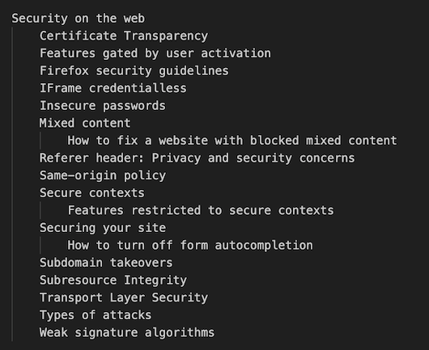

Web security docs for MDN
About this session (1)
- We need better security docs on MDN
-
We have:
-
We would like:
- feedback on our plan
- ongoing review for the work
About this session (2)
- Please mute when you're not speaking
-
Please "raise your hand" in Zoom to ask a question or comment
- The session is not being recorded
-
Discussion notes are in IRC:
-
This breakout is operated under the
W3C Code of Ethics and Professional Conduct
We need better security docs on MDN

- No organization
- No path to follow
- Incomplete
Security docs organization
Theory
- Same-origin policy
- Secure design principles
Practices
- Authentication
- Session management
Practices
- Things a developer (might) need to take care of
- "If you're doing X, then you need to take care of Y"
- Focused on concrete practical guidance.
Practices
- 101
- Authentication
- Authorization/access control
- Session management
- Configuration
- 3rd party software
- User input validation
- Operations
Practices 101
- Use HTTPS for everything
- Redirect HTTP to HTTPS
- Have a CSP
- Set cookie headers carefully
- Be conservative with CORS
- Validate form data on client and server
- Escape text and code
- Use a proven framework
Authentication
- Passwords: strength, transmission, storage
- Password managers
- MFA
- Take care with error messages
- CAPTCHA
- Forgotten password flow
- Security questions
- Passwordless protocols: OAuth, OpenID
- Web Authentication
Authorization
- Checking REST calls, API keys
- Separation of users and admins
- Least privilege and default deny
Session Management
- Use session management toolkits
- Use random session identifiers
- Session expiry
- Cookies: secure cookie handling
- CSRF protection
- Reauthenticate for high risk operations
Configuration
- Turn off directory browsing
- Remove unnecessary files (e.g. git files)
- Disable unnecessary plugins and services
- Secrets management
- CSRF protection
- Keep dev and live databases separate
3rd party software
- 3rd party JavaScript (HTTPS, CSPs, SRI)
- npm (managing dependencies)
- Patching strategy
User input validation
- Validation, sanitization, input hints
- Buffer overflows
- File upload
Operations
- Automate deployment
- Monitor
- Patching strategy
Discussion questions
- Feedback on overall shape
- How to talk about frameworks?
- The fear of imperfections